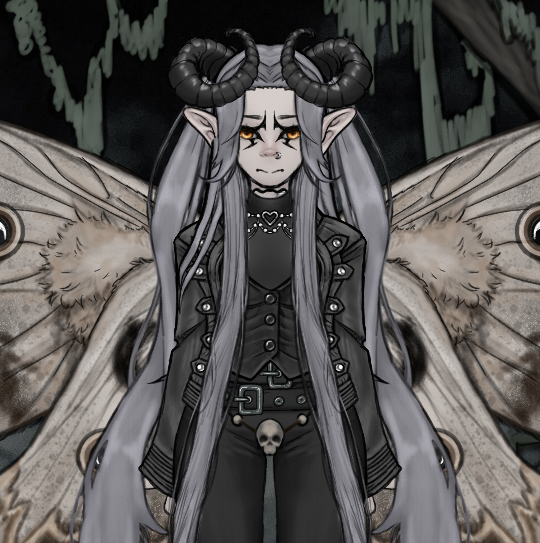

Supporting Cast · Archive File
Draco Zerathis
The Opal Yearning
".. Our impulses are too strong for our judgement sometimes."

Basic Information
168B Years old
SpeciesMoth Demon
GenderMale
OrientationAsexual
OriginSloth Ring
Known For???
Overview
Draco is a deep atheist due to certain experiences with the angels he has met, believing divinity to be flawed, hypocritical, or simply another hierarchy of power rather than something worthy of worship.
History
Draco’s heritage consists solely of demon, though of a rare lineage with a distinctly moth-like nature. This manifests not only in his appearance but also in certain instincts. Attraction to light, a strange affinity with flame, and an unusual resilience to transformation.
He is a traveler, wandering across realms, centuries, and civilizations with immense strength. Throughout the entirety of his long existence, only one being has ever managed to truly surpass him in combat.
Abilities & Feats
Appearance
- Long silky, silver hair
- Glowing Opal Eyes
- Skin replaced with silk
- Tall & slim, yet strong build
- Big Moth wings, often closed
Personality
Despite maintaining a calm, composed, and often menacing presence, Draco carries the quiet scars of time. Over the course of his life he has lost a vast number of meaningful people, places, and eras. Because of this, he still fears forming deep connections, knowing that time will inevitably take them away.